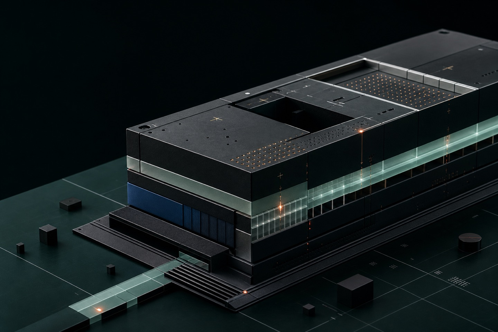

{% assign timeline = site.data[page.timeline_data] %}
{% assign current_stage_matches = timeline.items | where: "id", timeline.current_stage_id %}
{% assign current_stage = current_stage_matches | first %}
<main id="main-content" tabindex="-1">
  <nav class="breadcrumbs" aria-label="面包屑"><a href="../index.html">项目</a><span aria-hidden="true">/</span><a href="index.html">开发</a><span aria-hidden="true">/</span><span>当前项目阶段</span></nav>
  <div class="hero"><h1>当前项目阶段</h1><p>汇总已经完成的设计工作、当前正在推进的核心任务，以及后续计划开发的项目能力。</p><div class="badges"><span class="badge">Completed Work</span><span class="badge">In Progress</span><span class="badge">Roadmap</span></div></div>
  <div class="current-stage-feature">
    <figure class="current-stage-visual">
      
      <figcaption><span>SPECIFICATION CORE</span><strong>结构、边界与验证路径同步设计</strong></figcaption>
    </figure>
    <div class="current-stage-panel">
      <div class="current-stage-state"><span>CURRENT</span><strong>{{ current_stage.title | escape }}</strong></div>
      <p>{{ timeline.current.summary | escape }}</p>
      <dl>{% for fact in timeline.current.facts %}<div><dt>{{ fact.label | escape }}</dt><dd>{{ fact.value | escape }}</dd></div>{% endfor %}</dl>
    </div>
  </div>
  <section class="project-progress-section">
    {% include project-timeline.html timeline=timeline %}
  </section>
  <div class="next-prev"><a href="index.html">← 开发</a><a href="implementation-roadmap.html">实施路线图 →</a></div>
</main>
